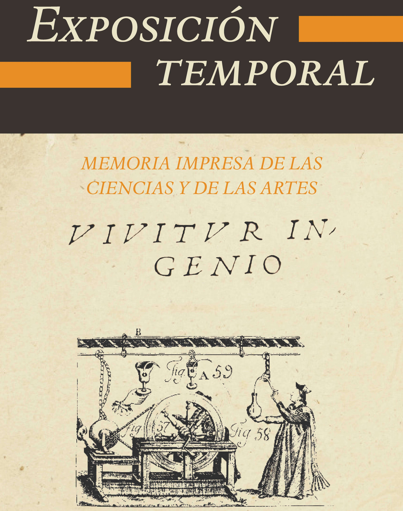
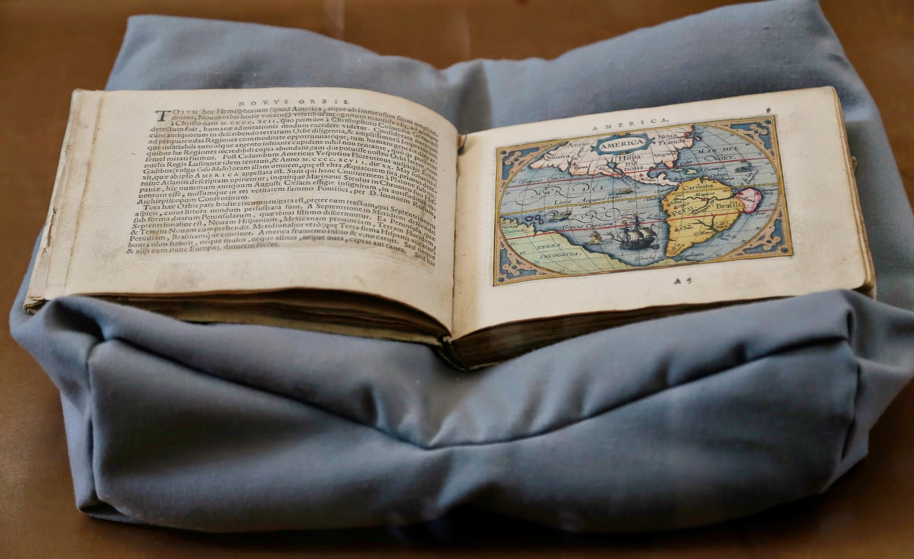
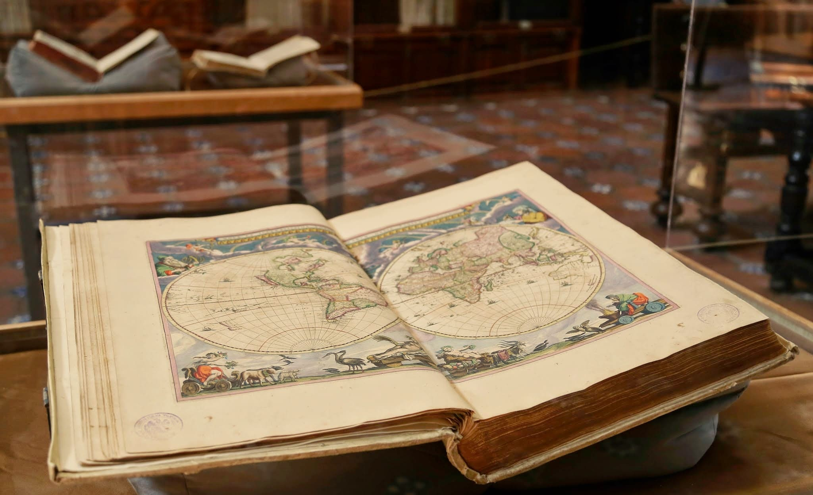
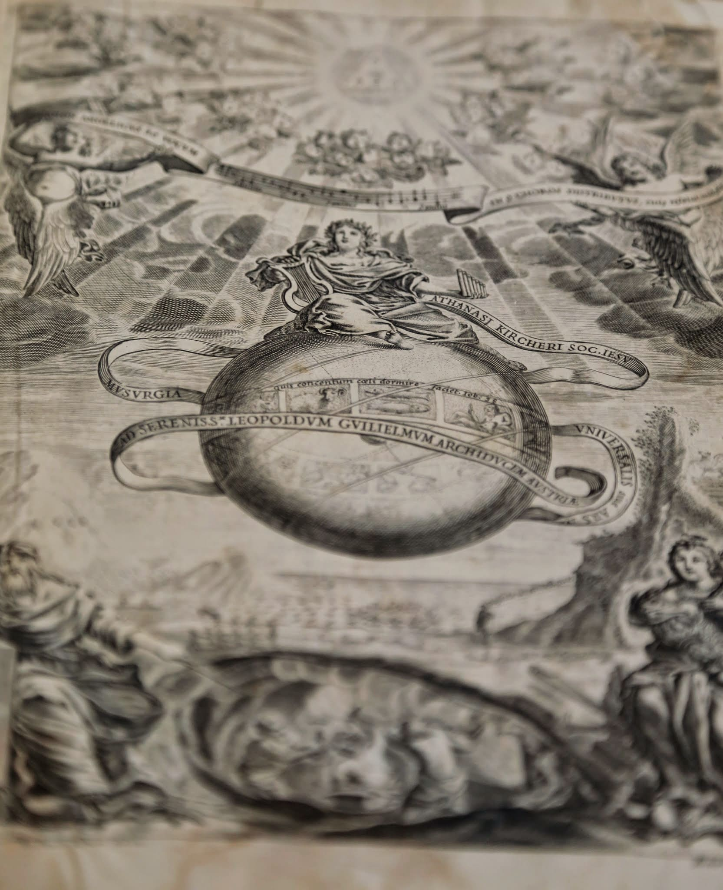

EXPOSICIÓN TEMPORAL
Memoria impresa de las ciencias y las artes
"VIVITUR INGENIO"
..
El Consejo Estatal para la Cultura y las Artes de Puebla (CECAP) invita al público en general a conocer la exposición Vivitur ingenio -El ingenio vive-, la cual exhibe treinta libros que difundieron en la época virreinal y desde Puebla de los Ángeles, el ingenio, el pensamiento y las ideas que cambiaron el curso de la historia de la ciencia.
Estos libros son parte de tres de los fondos antiguos más importantes de Puebla: las Bibliotecas José María Lafragua, de la BUAP; la Franciscana, de la UDLAP, y en la Biblioteca Palafoxiana, bajo resguardo del Gobierno del Estado.
Esta última es sede de la exposición que permanecerá abierta al público hasta el 30 de abril del 2015; los interesados pueden visitarla de martes a domingo, en horario de 10:00 a 17:00 hrs., en 5 oriente 5, Centro Histórico. Entrada general es de $25.00.
Los visitantes conocerán los libros que circulaban por las manos de las inteligencias más preciadas de la Nueva España, títulos que sorprenden al mostrar un ambiente intelectual vivo y audaz de la Puebla de Palafox; una ciudad de ayer y de hoy en la que el ingenio sigue vivo.